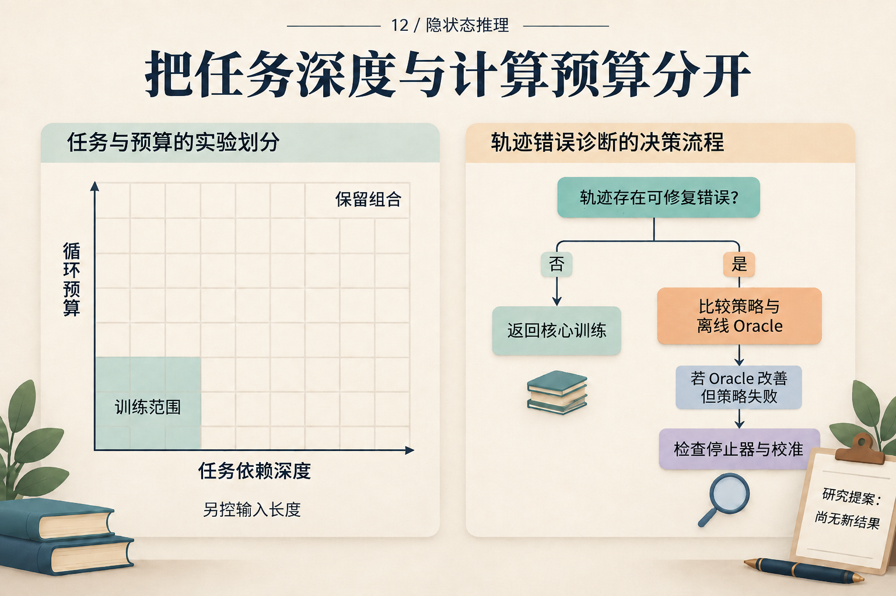

让“隐状态能续算”面对一个会失败的实验
一个模型多运行几步，答案变准了。这值得研究，但原因还没有确定：它可能学到了可继续的更新规则，也可能只在某个终点把答案整理成可读形式。
我们把问题缩小成一个可检验的假说：某个候选隐状态承载了中间计算结果，后续网络能把它用于新的后缀运算。 下面是一份尚未执行的研究提案。所有数值来自人为定义的算术任务，没有新增模型结果。
先写出网络之外的正确答案
用一个很小的模运算任务。初态是输入给定的 s₀；每步读取乘数 xₜ，乘完加1，再取除以11的余数：
sₜ = (sₜ₋₁ × xₜ + 1) mod 11
初态取0至10，乘数取1至10。固定素数模11并排除零乘数，使每次更新对前一状态都是一一映射：不同中间值经过同一个后缀，仍得到不同答案。这是任务本身的代数性质，方便避免“改了中间值，答案却必然相同”的无效检验。
这个任务受到 CODI 多项式迭代机制研究的启发；该文发现中间桥接、输入旁路和信息收缩可以共存。我们的模数、输入配对与下列干预是独立提出的设计。机制研究 v1，§3–6
准备两道三步题：
| 项目 | 受体 A | 供体 B |
|---|---|---|
| 输入 | s₀=2；乘数3、2、4 | s₀=1；乘数5、3、4 |
| 第一步 | 2×3+1 → 7 | 1×5+1 → 6 |
| 第二步 | 7×2+1 → 4 | 6×3+1 → 8 |
| 最终答案 | 4×4+1 → 6 | 8×4+1 → 0 |
箭头右边都已取模11。例如15的余数是4，33的余数是0。表格是准确的任务轨迹，不是模型的隐状态轨迹。
若把第一步的中间值从 A 的7换成 B 的6，同时保留 A 的后缀乘数2、4，新的答案应该是：
替换后的起点：6
下一步：(6 × 2 + 1) mod 11 = 2
最后一步：(2 × 4 + 1) mod 11 = 9
9不同于受体原答案6，也不同于供体原答案0。输出若变成9，就比“复制供体答案”更符合中间值续算；输出仅仅变化，还不够。
再决定要从网络里换什么
先选择一个允许连续状态反馈的固定架构，记录输入序列、连续步数与缓存规则。用上述任务训练答案监督基线及加入终点蒸馏的版本；基础模型、训练题目与训练计算预算配平，无法配平的差额公开。首轮实验固定这些条件，不同时搜索更多架构。
模型读到的是完整问题，因此某个早期潜在位置也可能包含后续输入或最终答案。我们不能因为它叫“第一步隐状态”，就认定它等于表中的第一步任务状态。候选位置要先在独立验证数据上定位：用固定容量探针寻找能读出 s₁ 的位置，并预先冻结层、位置、替换张量与评分方法。测试时不再逐题挑最有效的位置。
在干预运行中，只替换选定位置的激活；保留受体输入和其他既有缓存，重算所有依赖被替换激活的后续计算。若实现需要替换多层缓存才能影响后续，就明确把被干预对象命名为那组缓存，另做单激活对照。运行日志应足以重放这一操作。
这是从“哪儿能读出6”到“换入那里能否得到9”的检验。它不要求所有连续步都逐一对应手写步骤；若定位不到这样的候选，当前的中间状态假说就没有得到支持。
让对照和失败条件先于结果
同一批受体需要做自我替换、同中间值但不同前缀替换、异中间值替换、范数匹配 h_B − h_A 的随机扰动，以及仅输入缓存替换。供体与受体匹配序列长度、候选阶段和位置编码。自我替换应复现原运行；同值替换检验兼容性；随机扰动检验一般脆弱性；缓存对照检查旁路。异值供体组只保留反事实答案、受体原答案和供体原答案三者两两不同的配对，使后面的输出类别互不重叠；这条筛选不适用于同值供体控制。
这不是只比较一对 A、B。先按完整前缀 (s₀,x₁) 分组划分训练、验证和测试，避免同前缀变体跨集合；在可行范围内平衡中间值与答案频率，并报告因配对筛选留下的偏差。只看两边原题都答对的配对有助于机制诊断，但会筛掉难题，因此必须同时报告全部合格配对与该条件子集的数量和结果。
主要指标是异值移植后输出等于预先算好的反事实答案的比例，同时报告仍输出受体答案、输出供体答案和其他输出的比例。对所有对照使用同一批受体。随机种子、训练上限、最小关注效应和区间估计方法在正式测试前确定；用独立先导样本估计方差，再决定正式样本量，先导样本不回流测试。
| 可能观察 | 可以怎样解释 |
|---|---|
| 异值替换选择性得到反事实；同值替换稳定 | 支持所选状态在这些题上的局部续算作用 |
| 探针很准，但输出不跟随反事实 | 可能被动存储、旁路或干预不兼容；继续定位 |
| 自我替换也改变答案 | 先修干预实现或随机性控制 |
| 真实替换与随机扰动同样混乱 | 尚未获得语义特异的因果证据 |
| 只在很短任务上成立 | 局部作用可用，长程组合仍未建立 |
这张表规定了如何解释未来结果，不是预先宣布会出现哪一行。特别是失败：如果供体状态与受体缓存不兼容，它不能单独推翻模型所有形式的内部推理。能被推翻的是这个指定位置、指定表示、指定后缀下的续算假说。
小实验通过后，才逐步扩大问题
第一步先看未见前缀上的同长度续算。再独立增加任务更新次数与模型的连续步数：一条轴让题变难，另一条轴给模型更多预算。不要只测试“更长题配更多步”的对角线；按输入长度分层，并保留没有增加预算的对照。

这张图用于后续扩展。左侧的循环预算适用于循环深度模型；本实验的连续反馈模型应记录潜在步数，不能把两者的单位混为一谈。空白格没有测量结果。
理论可以帮助选择后续变量。循环逼近研究讨论时间步调制，Log-ICoT 用结构化课程分析学习；它们启发比较步号与监督，但没有证明本实验必然外推。循环理论，§3–4；Log-ICoT v1，§3
若进一步研究停机，先保存固定核心的整条答案轨迹，看较早正确答案是否存在，再学习不看标签的选择器。HRM 与 TRM 的更新和停机设计提供了研究入口；离线知道正确标签的最佳选择只能作诊断上界，不能充当部署策略。HRM v3；TRM v1，§2.5、§4.6
视觉迁移放在更后面。MCOUT 允许连续状态访问多模态嵌入，可以启发“只初始读图、反复读固定嵌入、重新编码局部图像”的对照，额外编码要计费。MCOUT v2，§3.1–3.2 这些扩展仍是提案，不应挤掉第一个小实验所需的对照。
正文先把左上角的问题做成完整可执行的检验，其余卡片是之后可能展开的方向。
这份设计的价值不取决于模型是否输出9。若没输出，我们有办法区分实现故障、表示不兼容与缺少续算证据；若输出了，也知道下一步要检验哪些前缀、长度与后缀。一次小而明确的失败，能比一个没有解释的总分更准确地决定下一项工作。